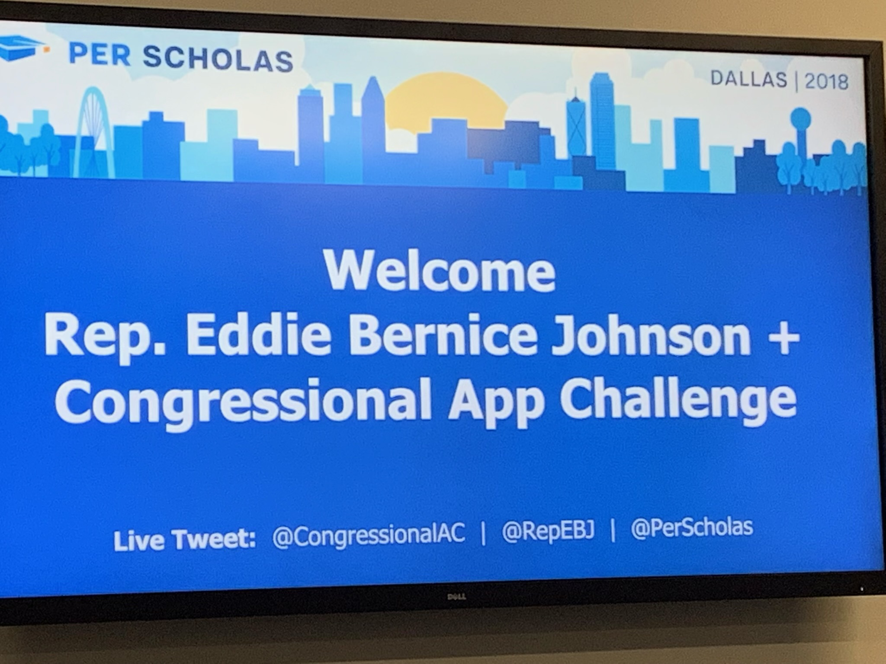
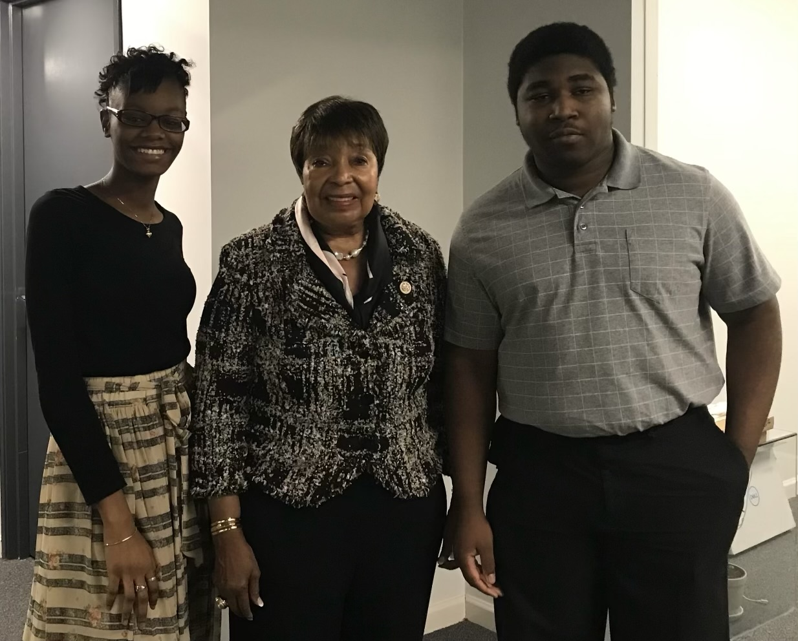

A Major Era of History
The Information Age is the period when computers, the internet, and digital technology became a major part of everyday life.
The Information Age began during the late 20th century as computers and digital communication became more useful in everyday life.
The Information Age has transformed the way people communicate, work, learn, and conduct business around the world. Technology has become an essential part of our everyday lives, connecting people and information faster than ever before. From smartphones and digital communication to advanced systems used in the workplace, technology continues to shape how we solve problems, collaborate, and make decisions. In many ways, technology has moved from simply being a tool we use to becoming an integral part of how we work and live.
I developed this website from scratch using Notepad, where I manually wrote the HTML and CSS code. I created the structure of the webpage with HTML and used CSS to control the presentation, including the colors, spacing, layout, and overall appearance. I separated the content from the styling by using an external CSS file, which makes the project easier to read.
For the final step, I copied the code I had already created in Notepad and transferred the project files to GitHub so I could publish the website and provide a live link. GitHub made it possible to share my work online without rebuilding the website. During this final step, the only adjustments I made were to the images. I then reviewed the published website to confirm that the content and images displayed as expected.
My approach was to start with an idea, break it down into manageable components, build the structure, apply the styling, and review the result in a browser. I paid attention to how the HTML elements were organized, how the external stylesheet affected the presentation, and how the image assets supported the content. I also used Visual Studio Code to review and test the project. This project reinforced the importance of understanding the fundamentals, paying attention to detail, and being willing to learn new tools. Although my original code was written independently in Notepad, I learned how to use GitHub to publish and share the finished project. To me, that is part of engineering: understanding what you build, adapting when a process is unfamiliar, and finding a way to bring the idea to completion.C++ and HTML have always been my first two languages, and coding has always had a place in my heart. I chose HTML and CSS for this project because they allowed me to demonstrate my understanding of web development fundamentals while creating something functional from the ground up. HTML defines the structure and content of a webpage, while CSS controls its visual presentation. I wanted to keep the implementation straightforward and focus on writing, organizing, and understanding my own code rather than relying on a framework to do the work for me.
Growing up, I always had a passion for technology. From being a little girl, I would find myself helping other people resolve their technical issues. In middle school, my teachers were amazed that I could resolve technical problems they had submitted support tickets for. That curiosity followed me into high school, where I became a Technical Intern for DeSoto ISD during my junior and senior year as well as a student in the technology academy where I was asked by Late Congresswoman Eddie Bernice Johnson to code an app for her program. And later awarded second place for my code.
During that experience, a teacher introduced me to both software and hardware. That was a turning point for me. I instantly fell in love with coding and became even more interested in understanding how computers work, from their physical components to the software that brings them to life. That passion has stayed with me ever since. Being able to take an idea, write instructions, and watch those instructions become something real still amazes me. Knowing that I can create something by putting my mind to it is one of the things I love most about coding.
One of the experiences that helped shape my interest in technology was being invited by Congresswoman Eddie Bernice Johnson to participate in the Congressional App Challenge through the technology program I attended in high school. This experience gave me an opportunity to apply my interest in technology and coding, and I was later awarded second place for my code.


I chose the Information Age because I am currently a History teacher, and this topic gave me the opportunity to connect my professional background with my passion for technology. The Information Age allows me to explain how technological advancements changed the way people communicate, access information, learn, work, and conduct business. I wanted to create a website that was not only technically meaningful but also educational and relevant to everyday life.